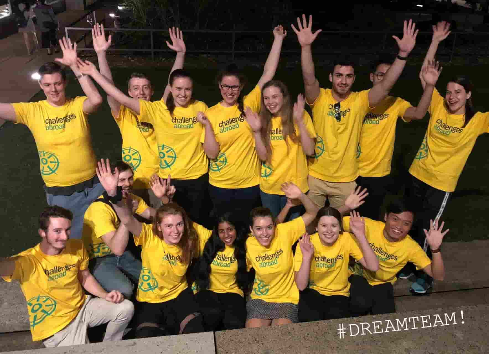

Key components of my professional journey extend beyond the realm of Computer Science and Information Technology. I have actively sought diverse experiences that have contributed to both my personal and professional growth. Among these experiences, two stand out distinctly: my volunteering expedition to a village in Romania and my previous career as a musculoskeletal Physiotherapist.
In 2018 I travelled with a university group to Odorheiu Secuiesc, Romania, where I contributed as part of a team to health education initiatives in collaboration with local care homes and schools. These initiatives included designing and delivering informative and interactive school lessons to primary age students on various health topics, including the food groups, exercise, and hygiene.
It involved conveying information to diverse audiences, many of whom we did not share a common language with. This honed my communication skills, as I learned to convey concepts using simple language, and visuals to ensure comprehension across language barriers, often speaking with interpreters to bridge the communication gap effectively. This experience helped shape my versatility and gave me a wonderful opportunity to connect with people from diverse communities.
In my previous role as a Physiotherapist, I assessed and treated patients with various acute and chronic musculoskeletal and neurological conditions. As part of this role, I worked with individual patients, as well as completed group exercise and hydrotherapy classes to aid treatment outcomes.
I often completed professional development courses to further my knowledge of best practice outcomes particularly for sporting related injuries. As a result of this work, I forged strong interpersonal relationships with my colleagues and patients, and often found positive links between return to sport strength milestones and their relevance in neurological rehabilitation.